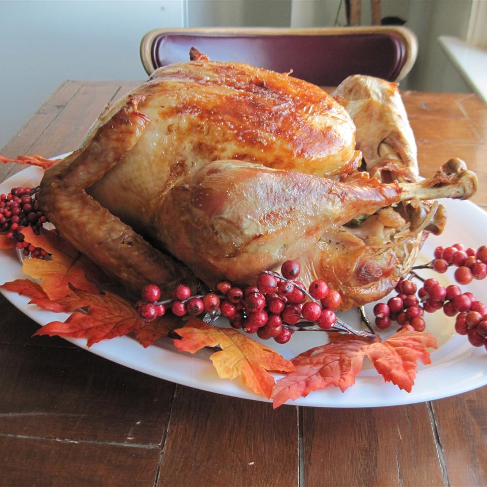

Turkey

Description
My grandmother and mother passed this recipe on to me. It changes just a little every year, because we've never written it down before.
But it is always incredibly juicy and succulent!
Ingrediets
- 2 tablespoons dried parsley
- 2 tablespoons ground dried rosemary
- 2 tablespoons rubbed dried sage
- 2 tablespoons dried thyme leaves
- 1 tablespoon lemon pepper
- 1 tablespoon salt
- 1 (15 pound) whole turkey, neck and giblets removed
- 2 stalks celery, chopped
- 1 orange, cut into wedges
- 1 onion, chopped
- 1 carrot, chopped
- 1 (14.5 ounce) can chicken broth
- 1 (750 milliliter) bottle champagne
Steps